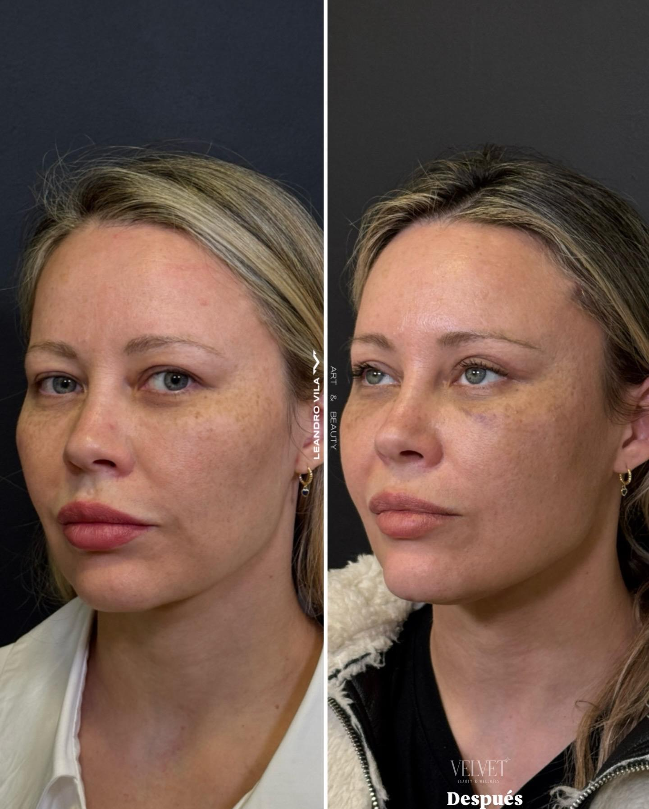
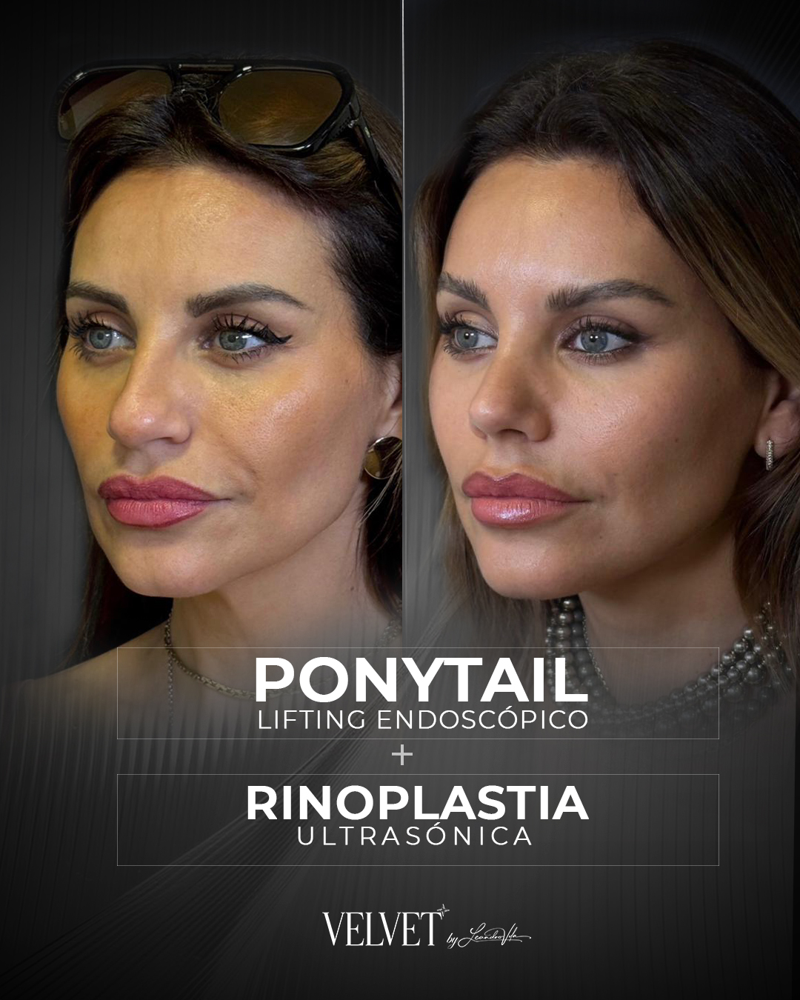
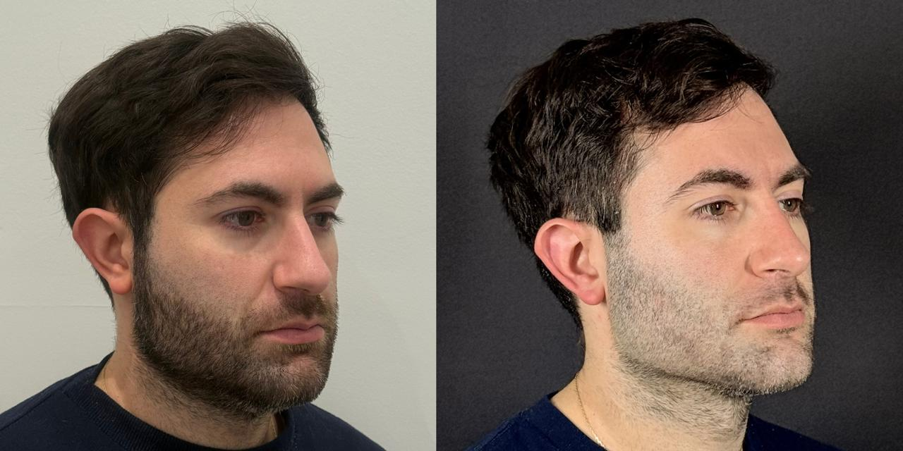
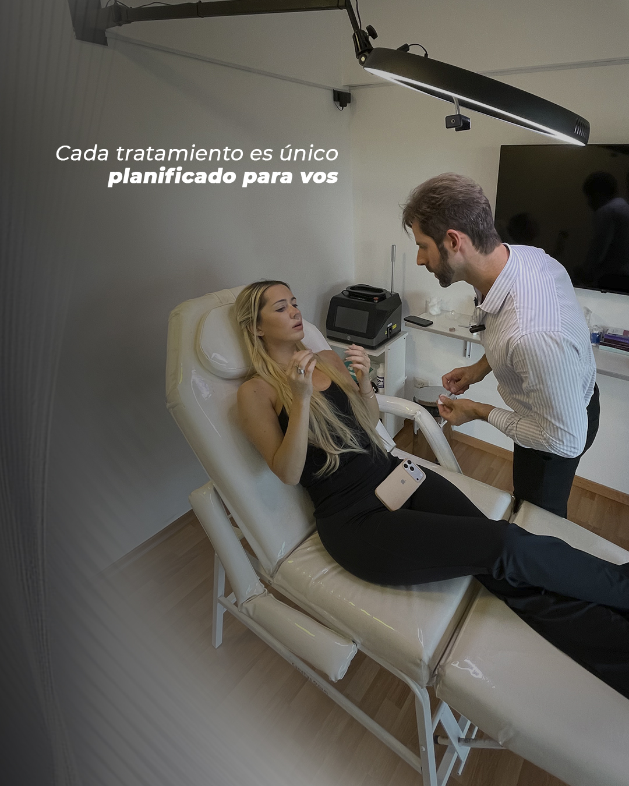
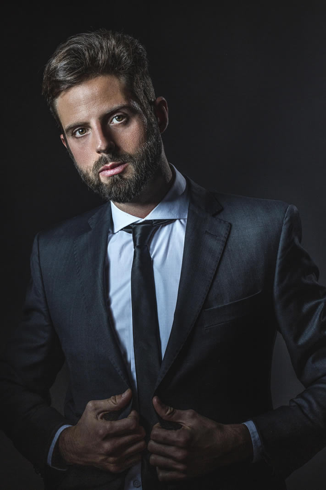

Deep Plane Facelift y Lifting Facial en Buenos Aires
Dr. Leandro Vila — Cirujano Plástico Facial (M.N. 147814 · Miembro Titular SACPER)
Reposicionamiento anatómico de tejidos profundos (sub-SMAS) para redefinir pómulos, contorno mandibular y cuello con resultados naturales y duraderos sin tensión en la piel.
¿Qué es el Deep Plane Facelift?
El Deep Plane Facelift aborda el rostro por debajo del plano muscular profundo (SMAS), liberando los ligamentos de retención faciales para reposicionar en bloque las mejillas, los surcos nasogenianos, la línea mandibular (jowls) y el cuello.
A diferencia del lifting tradicional —que estira la piel superficialmente—, la suspensión recae íntegramente sobre la estructura muscular profunda, logrando un rejuvenecimiento facial natural, sin tirantez ni estigmas quirúrgicos.

Caso Real · Reposición Sub-SMAS
Comparativa de Técnicas Quirúrgicas Endoscópicas
Ambos procedimientos utilizan tecnología e instrumental endoscópico para su abordaje, diferenciándose por las zonas anatómicas que tratan:
| Técnica | Plano Anatómico | Tratamiento de Tejidos | Indicación Principal / Objetivos |
|---|---|---|---|
|
Lifting Endoscópico (Frontal / Tercio Superior) |
Plano subperióstico asistido por microcámara e instrumental endoscópico | Liberación y elevación vertical mediante microincisiones ocultas en el cuero cabelludo, sin resección de piel visible. | Enfocado en cejas, frente y mirada. Reposición de cejas descendidas y despeje del marco orbitario. |
| Deep Plane Facelift Endoscópico | Plano sub-SMAS profundo con abordaje y magnificación endoscópica | Liberación precisa de ligamentos de retención y reposicionamiento en bloque del SMAS y compartimentos grasos. | Enfocado en tercio medio, mandíbula, jowls y cuello. Definición mandibular y cervical sin tracción cutánea. |
Lifting Facial Endoscópico: Técnica y Abordaje
El Dr. Leandro Vila explica en detalle cómo se realiza el procedimiento y por qué logra resultados naturales sin cicatrices visibles.
Publicaciones de Instagram · @drleandrovila
Casos reales, antes y después y contenido educativo en la cuenta oficial del Dr. Leandro Vila.
Deep Plane Lifting: reposición de tercio medio y mandíbula.

Ponytail Lifting Endoscópico + Rinoplastia Ultrasónica.

Lifting Endoscópico masculino con expresión natural.

Planificación quirúrgica personalizada en Puerto Madero.

+15
Años Formación
+500
Procedimientos
SACPER
Miembro Titular
Dr. Leandro Vila
Especialista en Cirugía Plástica, Estética y Reparadora (M.N. 147814)
El Dr. Leandro Vila es médico especialista en Cirugía Plástica, Estética y Reparadora dedicado con exclusividad a la anatomía y al rejuvenecimiento quirúrgico facial en Buenos Aires. Está registrado y habilitado por el Ministerio de Salud de la República Argentina (M.N. 147814) y es Miembro Titular de SACPER (Sociedad Argentina de Cirugía Plástica, Estética y Reparadora).
A lo largo de su carrera ha orientado su formación médica y perfeccionamiento quirúrgico hacia técnicas de plano profundo —como el Deep Plane Facelift, el Lifting Endoscópico y la Rinoplastia Ultrasónica— que respetan la estructura natural del rostro, evitando estigmas de tracción cutánea o rigidez en la expresión.
Su filosofía quirúrgica sostiene que el éxito de una cirugía facial reside en su invisibilidad técnica: lograr que el paciente se perciba fresco, descansado y armónico sin que resulte evidente que ha sido intervenido. Realiza sus intervenciones en centros sanatoriales de alta complejidad de CABA y atiende en su consultorio de Puerto Madero a pacientes de Buenos Aires, el interior de Argentina y del exterior.
- ✓ Título Profesional: Médico Especialista en Cirugía Plástica, Estética y Reparadora (M.N. 147814).
- ✓ Sociedad Científica: Miembro Titular de la Sociedad Argentina de Cirugía Plástica, Estética y Reparadora (SACPER).
- ✓ Especialización: Planos anatómicos profundos (Deep Plane), Lifting Endoscópico Facial y Rinoplastia Ultrasónica.
- ✓ Sede Quirúrgica y Consultorio: Centros sanatoriales de alta complejidad en CABA y consultorio en Aimé Painé 1665, Puerto Madero.
“Desde la primera consulta hasta el alta, todo fue impecable: profesionalismo, calidez y un acompañamiento constante. Quiero agradecer especialmente al Dr. Vila por su excelente trabajo, su claridad para explicar cada paso y la tranquilidad que transmite.”
★★★★★ Petu Baez · Opinión de Google
Preguntas Frecuentes sobre Deep Plane y Lifting Facial
Todo lo que necesitás saber sobre el procedimiento, zonas tratadas, cicatrices y recuperación.
Evaluación en Puerto Madero, Buenos Aires
location_on Aimé Painé 1665, Puerto Madero, C1107 Ciudad Autónoma de Buenos Aires
call 011 15-3958-3670
schedule Lunes a Viernes de 9:00 a 19:00 hs (con cita previa)